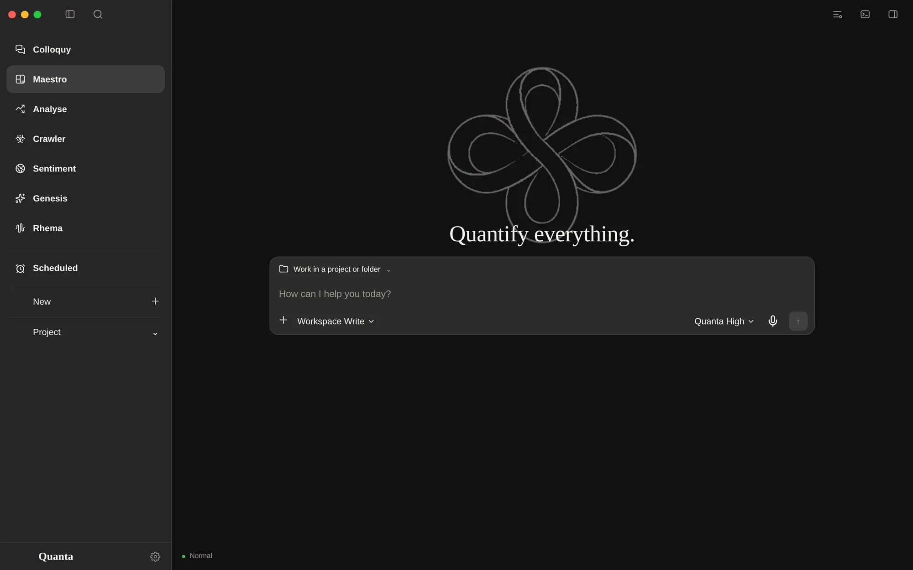
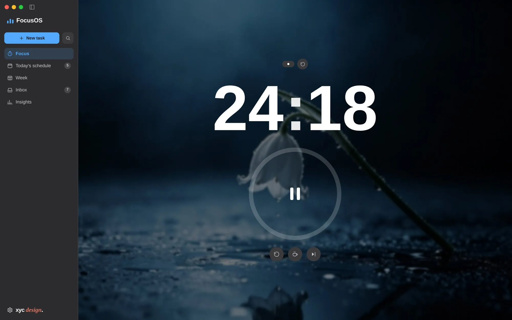

Pages

Quanta seven pages, one window
The default page: reads files, runs shell commands, writes code — every move shown in the turn.
View case studyI'm XYC. I work across product design, LLM applications, agents, prompts and fine-tuning — usually on the same project, end to end.
Five kinds of work, usually on the same product — from the first screen to the training run.
Product thinking, interface, motion and design systems — carried to the last empty state.
Applications built around models: retrieval, tool use, context design and evaluation.
Multi-step agents with tools, memory and guardrails — and the plumbing that keeps them honest.
Instructions and context that make models dependable rather than merely impressive.
Datasets, training runs and evals for specialised models that need to sound like their domain.
Everything I can put on a project, and what sits underneath each branch. Hover or tap a branch to bring its cluster forward.
 xyc.
xyc.
Hover or tap a branch — the rest steps back. XYC-2026 · CAPABILITY MAP
Fewer products, carried further.
Pages

The default page: reads files, runs shell commands, writes code — every move shown in the turn.
View case studyZero-drift timer, a drag-to-plan timeline, week view, inbox and insights — six screens of one app, captured while it runs.
View case study
I design the interface, then build the model-side systems that make it work: the retrieval, the agent loop, the prompt, the eval, the fine-tune.
Independent, based in Nanjing. Fewer projects, each carried all the way to the last empty state and the last 2 a.m. bug.